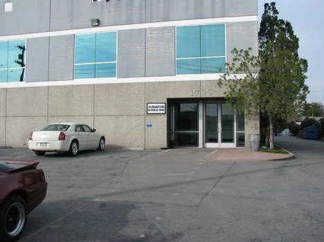
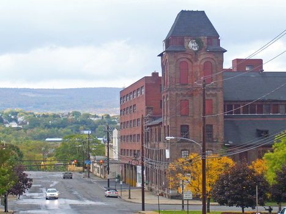
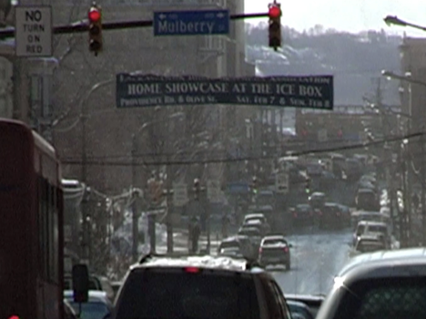

Scranton est une ville située dans l'État de Pennsylvanie, aux États-Unis. C'est une ville historique avec une riche culture et une architecture intéressante. Scranton est également connue pour son charbon et son acier, qui ont joué un rôle important dans son développement économique au 19ème siècle.
La ville est célèbre pour ses attractions touristiques telles que le parc Nay Aug et le musée Steamtown. Scranton propose également une variété de restaurants, de magasins et de divertissements pour tous les âges.
Si vous êtes à la recherche d'une ville pleine d'histoire et de vie culturelle, Scranton est la destination idéale pour vous. Planifiez votre visite dès maintenant !


Voici quelques-unes des activités populaires à Scranton:
- Exploration de la ville historique: Scranton est connu pour son riche patrimoine industriel et ses bâtiments historiques, notamment la Scranton Iron Furnaces, le Electric City Sign et le Steamtown National Historic Site.
- Parcs et activités de plein air: La ville dispose de nombreux parcs et sentiers pour la marche, la randonnée et les activités en plein air, tels que le PNC Field, le Nay Aug Park et le McDade Park.
- Musées et galeries d'art: Scranton abrite également plusieurs musées et galeries d'art, notamment le Lackawanna County Coal Mine Tour, le Everhart Museum et le Scranton Cultural Center.
- Shopping et divertissement: Les visiteurs peuvent également profiter d'une variété de magasins, de restaurants et de centres de divertissement, tels que le Montage Mountain, le Steamtown Mall et le Comedy Factory Outlets.
- Événements annuels: La ville accueille également de nombreux événements annuels, tels que le St. Patrick's Day Parade, le First Night Scranton et le La Festa Italiana.
- Vous pourriez également pendant votre séjour faire une halte chez Dunder Mifflin, entreprise de papeterie et de fournitures de bureau. Connu pour sa gestion de la clientèle et ses efforts de team building. Vous serez sans aucun doute bien accueilli par l'équipe de Michael Scott, Jim Halpert, Dwight Schrute (le vendeur n°1 de sa filiale et directeur adjoint du directeur régional), Pam Beesly, Ryan Howard, Stanley Hudson Creed Bratton, Angela Martin, Kelly Kapoor, Toby Flenderson.
Vous pouvez également vous renseigner auprès de l'Office de tourisme local pour en savoir plus sur les activités et événements en cours.